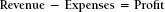
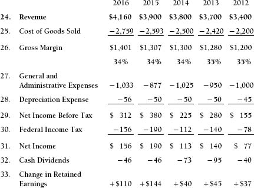

CHAPTER TWO

The Income Statement
The income statement, often called a statement of operations or a profit and loss statement (P&L), describes the performance of the company over a period of time, usually a month, a quarter, or a year. This information measures the company’s achievement (revenue) and the resources (expenses) that were expended in order to produce that achievement. The income statement is summarized as follows:

The difference between revenues achieved and expenses incurred is called profit or net income.
The following paragraphs describe the details of the income statement. As a reference, we have provided a five-year history of the Metropolitan Manufacturing Company in Exhibit 2-1. This is part of the same set of financials as the balance sheet in Chapter 1.
The numbers in the section titles refer to the line items on the income statement, shown as Exhibit 2-1.
Exhibit 2-1. Metropolitan Manufacturing Company, Inc.
Statements of Profit and Loss for the Years Ending December 31 ($000)

24. Revenue, $4,160,000
This is the dollar amount of products and services that the company provided to its customers during the year. This is often called sales; in Great Britain, it is called turnover or income. A sale is achieved when the customer takes ownership of and/or responsibility for the products.
Achieving revenue is quite distinct from “making a sale.” You might use the latter phrase when you and the customer agree to terms. You might say that the sale is recognized when the purchase order is received. However, revenue is not recorded until the customer has received and approved of the products or services that were purchased.
Revenue is the value of products or services that is delivered to a satisfied customer. The customer either pays cash or promises to pay in the future; in the latter case, the amount is recorded as an accounts receivable.
Be clear that earning revenue is not the same as receiving the cash for products and services. Cash can be received prior to the recording of revenue. For example, a customer may make a down payment or deposit or may pay in advance for a magazine subscription. More commonly, however, businesses receive cash after the revenue is earned, resulting in accounts receivable. One type of business in which the receipt of cash and the recording of revenue might occur at the same time is the checkout counter at a supermarket.
The amount of revenue achieved by Metropolitan Manufacturing Company is $4,160,000. This is after reductions for price discounts and allowances for possible returns and warranties. For example:
| Gross Amount at List Price | $4,310,881 | |
| – Price Discounts | – 86,218 | (2.0%) |
| – Allowances for Returns and Warranties | – 64,663 | (1.5%) |
| = Revenue | $4,160,000 |
Many companies record their revenues in this much detail in order to monitor their price discounting practices and other reductions from revenue.
25. Cost of Goods Sold, $2,759,000
Cost of goods sold is the cost of producing or purchasing the goods that are delivered to customers. This amount is subtracted from revenue in order to determine gross profit or gross margin. Cost of goods sold includes the following elements:
- Raw materials
- Purchased components
- Direct labor (this includes the wages and other payments made to those who actually manufacture the product and possibly their direct supervisors)
- Operating and repairing the equipment used to manufacture the products
- Other manufacturing expenses, including utilities and maintenance of the production facility
The amount recorded as cost of goods sold is part of the difference between expenses and expenditures, discussed in Chapter 1. Cost of goods sold is an expense, and cost of production is an expenditure. Cost of goods sold will be different from cost of production because of changes in inventory. If inventory levels decrease during the period, then the cost of goods sold will be higher than the cost of production by the amount of the change in inventory.
If this were a service business, the equivalent of cost of goods sold would be called direct cost. Direct cost is the sum total of all of the spending necessary to provide the company’s customers with a valuable experience. It includes the wages paid to all the people who interface with the customers, plus all of the support spending necessary to help those people perform their jobs.
26. Gross Margin, $1,401,000
This measures the profitability achieved as a result of producing and selling products and services. It measures manufacturing efficiency and the desirability of the company’s products in the marketplace. Gross margin percentage is another measure of that performance.
27. General and Administrative Expenses, $1,033,000
This amount represents the cost of operating the entire infrastructure of the company. Included in this category are staff expenses (accounting, computer operations, senior management), selling expenses (salaries, travel), promotional expenses (advertising, trade shows), and research and development (technological research).
28. Depreciation Expense, $56,000
This is the portion of prior capital expenditures that has been allocated to the current year and is recorded as an expense in that year. It is not a cash expenditure.
29. Net Income Before Tax, $312,000
This amount is equal to revenue minus all operating and nonoperating expenses incurred by the company. This may also be called “Pre-Tax Income.” For Metropolitan Manufacturing Company, Inc., it is:
| Revenue | $4,160,000 | |
| – Cost of Goods Sold | 2,759,000 | |
| – General and Administrative Expenses | 1,033,000 | |
| – Depreciation Expense | 56,000 | |
| –$3,848,000 | ||
| = Net Income Before Tax | $ 312,000 |
30. Federal Income Tax, $156,000
In the United States, corporations pay approximately 34 percent of their profit to the federal government in the form of income taxes. For the Metropolitan Manufacturing Company example, however, we used a rate of 50 percent to keep the calculations simple. This 34 percent corporate tax rate is usually much higher than the rate big companies actually pay. Many companies do not pay U.S. corporate taxes on profits earned elsewhere in the world. They actually pay those taxes only after the funds are repatriated back to the United States.
31. Net Income, $156,000
This is the amount of profit that the corporation has achieved during the year. All expenses related to purchases from vendors and all other operating expenses have been taken into account. The owners of the business may keep this profit for their personal use (dividends) or reinvest all or part of it in the corporation to finance expansion and modernization (retained earnings). This is the number used by public companies to calculate earnings per share. It is also the number used in many of the financial ratio calculations discussed in Chapter 6.
32. Cash Dividends, $46,000
This is the portion of the year’s profits that were distributed to the owners of the business. The remainder (the portion of net income that was not paid to the owners) was retained in the business each year. Therefore:
| Net Income | $156,000 |
| – Cash Dividends | 46,000 |
| = Increase in Retained Earnings | $110,000 |
33. Change in Retained Earnings, $110,000
This represents the portion of the profits that the owners reinvested in the business in the year 2016. The cumulative amount that the owners have reinvested in the business since its inception is $1,357,000. This is the cumulative retained earnings; it appears on the balance sheet on line 21. Notice on the balance sheet that line 21 increased by $110,000 in 2016, which represents that year’s reinvestment.
Analysis of the Income Statement
A decline in revenue is not necessarily bad. There are times when revenue is flat but gross profit is improving. This is often a sign that the company is “cleansing” its product mix, or eliminating those products whose profitability is much less than the company average. It may be doing this for a number of possible reasons:
- The products are just not very profitable.
- Available productive capacity is limited, and the company will use these newly available facilities to produce faster-growing, higher-margin products.
- The products being eliminated are not of high enough quality, impairing the company’s reputation as a provider of high-quality products.
- The eliminated products were consuming large amounts of cash, as they required high levels of inventory and accounts receivable to support the business.
- The company decided to outsource the production of these products to third parties. It continues to provide the products to its customers, but it now earns a sales commission rather than the full revenue.
- The company now leases some equipment to customers rather than selling it outright. Revenue will decline for a while. This happens when software providers convert to a software licensing strategy rather than sell the software outright. More IT companies will experience this phenomenon as they increasingly provide cloud computing rather than selling or licensing the software at all.
- The company unilaterally eliminates a line of products because it seeks to redefine its image and position in the marketplace. A terrific example of this is CVS, which used to be a drugstore chain. CVS rebranded itself as a health company in 2014. It accomplished this in part by eliminating sales of all tobacco products, thereby forgoing tens of millions of dollars in revenue and profits. There was no public or legal pressure to do this. By adding pharmacy benefit management and other medical services to its retail stores, CVS now has more revenue and profitability than it did before the strategy change.
If revenue is increasing but the gross profit percentage is decreasing, the company is probably gaining more business by reducing its selling prices. If revenue is increasing and gross profit percentage is decreasing, but the gross profit dollars are increasing, the company is reducing its price to sell more product and the strategy has been tremendously successful. An increase in gross profit dollars improves the company’s cash flow. There is no negative connotation to reducing prices if the strategy is necessary and successful. This is especially true if the company has excess capacity. Selling lower-margin but profitable high-quality products will improve cash flow and profitability.
General and administrative expenses should generally increase more slowly than revenue. Economies of scale, efficiency, and the fact that general and administrative expenses are essentially fixed costs support this financial relationship. However, there are exceptions to this. In some companies that are driven by research and development (R&D) investments (think biotech and information technology), R&D expense may be included in the general and administrative expenses line. Certainly an R&D-driven company should be increasing the amount of this investment, consistent with the available funding and the success of its ongoing efforts.
Provision for Federal Income Tax
This is the corporate tax rate, which is usually in the 34 percent range, times the income before tax. It is not necessarily the amount of taxes that the company actually paid. This is because the accounting methodology used for a company’s financial reports to shareholders is different from the methodology that the company uses in preparing its tax return. The average corporate tax rate actually paid by corporations in the United States is approximately 20 percent. There are many explanations for this. Here are two:
Profits earned overseas by American companies are not subject to U.S. corporate income tax until the cash flow from the profits is repatriated to the United States. This is always subject to change under varying versions of what Congress calls “reform” and “tax holiday.”
Most companies that make capital expenditures will capitalize the expenditures on the shareholders’ reports (place the item on the balance sheet as a fixed asset), yet expense the same expenditures on the company’s tax return. This is perfectly legitimate and common. This will lower the company’s profit on the tax return, resulting in a lower payment. The difference between the accounting provision of 34 percent and the amount actually paid will appear on the company’s balance sheet as a liability, usually called deferred taxes or income taxes payable.
Net Income
Remember that this is not the amount of cash that has actually been generated by the business. Cash from revenue generated may not yet have been collected, and many expenses, particularly depreciation, are not expenditures.
If the company is performing well, net income should increase much faster than revenue. Growth enhances efficiency and provides financing for technological investment. Companies with a high proportion of fixed costs should show considerable profit improvement relative to revenue growth. (This is called “operating leverage.” ) Of course, the reverse is also true. Declining revenues can decimate a high-fixed-cost business. Think back to the steel, aluminum, and auto businesses in the 2008–2010 time period.
Net income can improve during a period of severe revenue decline. This can be the result of a drastic reduction in headcount and other areas of overhead. The massive cost cutting in 2008– 2009 led to the loss of more than five million jobs.
More than half of these jobs were classified as general and administrative. As a result, many companies returned to profitability in 2009 despite serious revenue contractions. This is OK for a while (it’s much better than not returning to profitability and going bankrupt). However, if the headcount reductions were of “unnecessary” people, why did it take a revenue contraction to precipitate the decision? If the headcount reductions included people who were working on R&D and other development projects necessary for future prosperity, how long will it take for the company to reemploy those resources and achieve the benefits of their efforts?
Oil and natural gas companies experienced severe revenue declines in the 2014–2015 time period, not because of volume declines but as a result of price declines in the 50 percent range. Oil sold in 2015 for as little as $45 per barrel although it had been averaging $100 per barrel in 2013. In fact, because of speculation and political turmoil in some oil-producing parts of the world, it spiked to as high as $140 per barrel in the period before 2014.